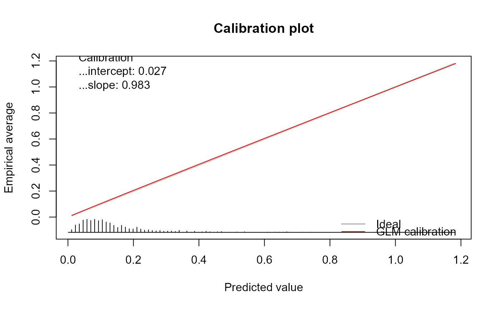

Calibration performance using the generalized calibration framework
genCalCurve.RdFunction to assess the calibration performance of a prediction model where the outcome's distribution is a member of the exponential family (De Cock Campo, 2023). The function plots the generalized calibration curve and computes the generalized calibration slope and intercept.
Usage
genCalCurve(
y,
yHat,
family,
plot = TRUE,
Smooth = FALSE,
GLMCal = TRUE,
lwdIdeal = 2,
colIdeal = "gray",
ltyIdeal = 1,
lwdSmooth = 1,
colSmooth = "blue",
ltySmooth = 1,
argzSmooth = alist(degree = 2),
lwdGLMCal = 1,
colGLMCal = "red",
ltyGLMCal = 1,
AddStats = T,
Digits = 3,
cexStats = 1,
lwdLeg = 1.5,
Legend = TRUE,
legendPos = "bottomright",
xLim = NULL,
yLim = NULL,
posStats = NULL,
confLimitsSmooth = c("none", "bootstrap", "pointwise"),
confLevel = 0.95,
Title = "Calibration plot",
xlab = "Predicted value",
ylab = "Empirical average",
EmpiricalDistribution = TRUE,
length.seg = 1,
...
)Arguments
- y
a vector with the values for the response variable
- yHat
a vector with the predicted values
- family
a description of the type of distribution and link function in the model. This can be a character string naming a family function, a family function or the result of a call to a family function. (See family for details of family functions.)
- plot
logical, indicating if a plot should be made or not.
- Smooth
logical, indicating if the flexible calibration curve should be estimated.
- GLMCal
logical, indicating if the GLM calibration curve has to be estimated.
- lwdIdeal
the line width of the ideal line.
- colIdeal
the color of the ideal line.
- ltyIdeal
the line type of the ideal line.
- lwdSmooth
the line width of the flexible calibration curve.
- colSmooth
the color of the flexible calibration curve.
- ltySmooth
the line type of the flexible calibration curve.
- argzSmooth
arguments passed to
loess.- lwdGLMCal
the line width of the GLM calibration curve.
- colGLMCal
the color of the GLM calibration curve.
- ltyGLMCal
the line type of the GLM calibration curve.
- AddStats
logical, indicating whether to add the values of the generalized calibration slope and intercept to the plot.
- Digits
the number of digits of the generalized calibration slope and intercept.
- cexStats
the font size of the statistics shown on the plot.
- lwdLeg
the line width in the legend.
- Legend
logical, indicating whether the legend has to be added.
- legendPos
the position of the legend on the plot.
- xLim, yLim
numeric vectors of length 2, giving the x and y coordinates ranges (see
plot.window)- posStats
numeric vector of length 2, specifying the x and y coordinates of the statistics (generalized calibration curve and intercept) printed on the plot. Default is
NULLwhich places the statistics in the top left corner of the plot.- confLimitsSmooth
character vector to indicate if and how the confidence limits for the flexible calibration curve have to be computed.
"none"omits the confidence limits,"bootstrap"uses 2000 bootstrap samples to calculate the 95% confidence limits and"pointwise"uses the pointwise confidence limits.- confLevel
the confidence level for the calculation of the pointwise confidence limits of the flexible calibration curve.
- Title
the title of the plot
- xlab
x-axis label, default is
"Predicted value".- ylab
y-axis label, default is
"Empirical average".- EmpiricalDistribution
logical, indicating if the empirical distribution of the predicted values has to be added to the bottom of the plot.
- length.seg
controls the length of the histogram lines. Default is
1.- ...
Value
An object of type GeneralizedCalibrationCurve with the following slots:
- call
the matched call.
- ggPlot
the ggplot object.
- stats
a vector containing performance measures of calibration.
- cl.level
the confidence level used.
- Calibration
contains the calibration intercept and slope, together with their confidence intervals.
- Cindex
the value of the c-statistic, together with its confidence interval.
- warningMessages
if any, the warning messages that were printed while running the function.
- CalibrationCurves
The coordinates for plotting the calibration curves.
References
De Cock Campo, B. (2023). Towards reliable predictive analytics: a generalized calibration framework. arXiv:2309.08559, available at https://arxiv.org/abs/2309.08559.
Examples
library(CalibrationCurves)
library(mgcv)
#> Loading required package: nlme
#>
#> Attaching package: 'nlme'
#> The following object is masked from 'package:dplyr':
#>
#> collapse
#> This is mgcv 1.9-3. For overview type 'help("mgcv-package")'.
data("poissontraindata")
data("poissontestdata")
glmFit = glm(Y ~ ., data = poissontraindata, family = poisson)
# Example of a well calibrated poisson prediction model
yOOS = poissontestdata$Y
yHat = predict(glmFit, newdata = poissontestdata, type = "response")
genCalCurve(yOOS, yHat, family = "poisson", plot = TRUE)
#> Waiting for profiling to be done...
#> Waiting for profiling to be done...

#> Call:
#> genCalCurve(y = yOOS, yHat = yHat, family = "poisson", plot = TRUE)
#>
#> A 95% confidence interval is given for the calibration intercept and calibration slope.
#>
#> Calibration intercept Calibration slope
#> 0.02710876 0.98320991
# Example of an overfit poisson prediction model
gamFit = gam(Y ~ x1 + x3 + x1:x3 + s(x5), data = poissontraindata, family = poisson)
yHat = as.vector(predict(gamFit, newdata = poissontestdata, type = "response"))
genCalCurve(yOOS, yHat, family = "poisson", plot = TRUE)
#> Waiting for profiling to be done...
#> Waiting for profiling to be done...
 #> Call:
#> genCalCurve(y = yOOS, yHat = yHat, family = "poisson", plot = TRUE)
#>
#> A 95% confidence interval is given for the calibration intercept and calibration slope.
#>
#> Calibration intercept Calibration slope
#> -0.01609734 0.82441039
# Example of an underfit poisson prediction model
glmFit = glm(Y ~ x2, data = poissontraindata, family = poisson)
yOOS = poissontestdata$Y
yHat = predict(glmFit, newdata = poissontestdata, type = "response")
genCalCurve(yOOS, yHat, family = "poisson", plot = TRUE)
#> Waiting for profiling to be done...
#> Waiting for profiling to be done...
#> Call:
#> genCalCurve(y = yOOS, yHat = yHat, family = "poisson", plot = TRUE)
#>
#> A 95% confidence interval is given for the calibration intercept and calibration slope.
#>
#> Calibration intercept Calibration slope
#> 0.02454964 1.30572143
#> Call:
#> genCalCurve(y = yOOS, yHat = yHat, family = "poisson", plot = TRUE)
#>
#> A 95% confidence interval is given for the calibration intercept and calibration slope.
#>
#> Calibration intercept Calibration slope
#> -0.01609734 0.82441039
# Example of an underfit poisson prediction model
glmFit = glm(Y ~ x2, data = poissontraindata, family = poisson)
yOOS = poissontestdata$Y
yHat = predict(glmFit, newdata = poissontestdata, type = "response")
genCalCurve(yOOS, yHat, family = "poisson", plot = TRUE)
#> Waiting for profiling to be done...
#> Waiting for profiling to be done...
#> Call:
#> genCalCurve(y = yOOS, yHat = yHat, family = "poisson", plot = TRUE)
#>
#> A 95% confidence interval is given for the calibration intercept and calibration slope.
#>
#> Calibration intercept Calibration slope
#> 0.02454964 1.30572143